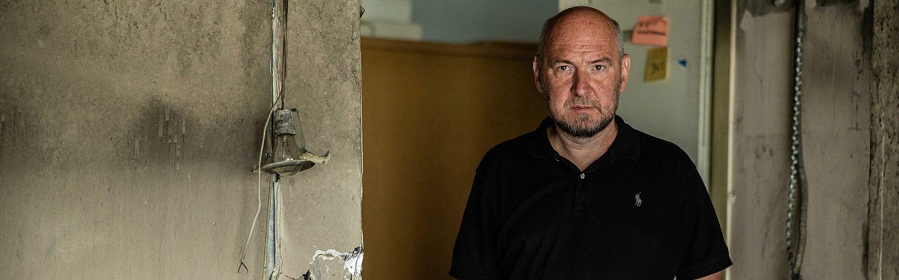
A Hit Too Close To Home. What happened to the Institute of Biochemistry after a drone strike
12.08.26
On the table of Denys Kolybo, the head of Palladin Institute of Biochemistry, there’s a portrait of the founder and patron of the institution. It’s a photo taken in 1948 that was salvaged from the building destroyed by the Russians. Before visiting the ruins, we discussed the Institute’s history with Denys.
One hundred years of research
Oleksandr Palladin was born and completed his studies in Russia, but went on to create a prominent school of biochemistry in Ukraine. 101 years ago, he founded a scientific institute — first, in Kharkiv¹, and when the capital of Soviet Ukraine was transferred to Kyiv, the institution moved to a building not far from the St. Volodymyr Cathedral, which was designed by Palladin specifically for the Institute. He lived and worked there, without separating work from private life, and held work meetings on his balcony.
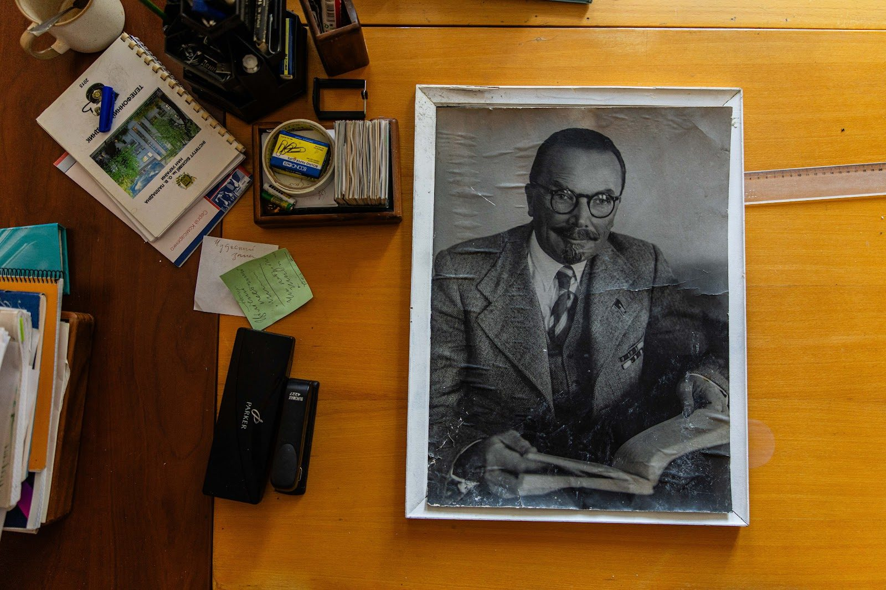
Oleksandr Palladin knew how to sell the idea of establishing an institute to Soviet authorities. According to Denys, he promised improvements in nutrition, physical labor capacities, and intellectual skills of Soviet citizens: “Three classical areas: vitaminology, neurobiochemistry, and muscle biochemistry.” Seven other departments were added to the institute’s structure over the years: Departments of Protein Structure and Function, Enzyme Chemistry and Biochemistry, Molecular Immunology, Lipid Biochemistry, Molecular Biology, Cellular Signaling Mechanisms, and Scientific and Technical Information.
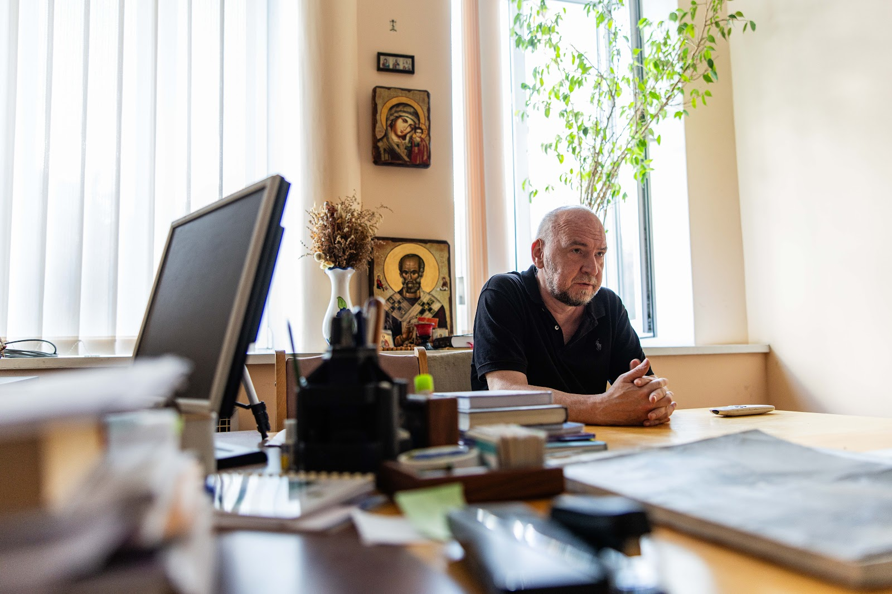
Oleksandr Palladin’s achievements include developing the drug “Vikasol.” He found a way to convert fat-soluble vitamin K into a water-soluble form suitable for injection. It was created during WWII to stop bleeding. Vitamin K participates in the synthesis of prothrombin in the liver, which is an important component in the blood-clotting process. The drug is still used to stop internal bleeding. Blood-clotting has been one of the key subjects of the institute’s research ever since: “Stopping bleeding, prevention and early diagnostics of thrombosis, minimization of scarring after surgical interventions — the institute has achievements in all these fields,” Denys comments.
After the Soviet war in Afghanistan ended, there was a rather severe problem with diphtheria, which was brought home by the veterans. At that time, diagnosing it took three days, which was far too long, so the institute developed rapid tests.
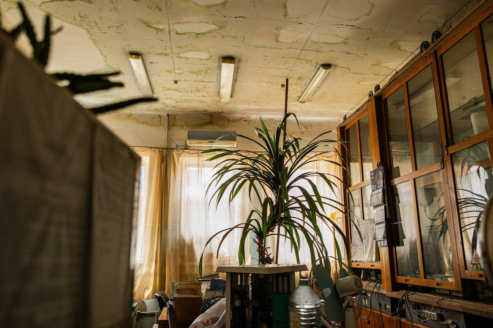
In the office next door, Denys shows us cardboard boxes with screening test kits for diphtheria and tuberculosis (an alternative to the tuberculin sensitivity test and X-ray imaging), developed at the institute. Ukrainian test kits for COVID-19 and vaccine prototypes were also in development here. They couldn’t conduct trials for the latter, unfortunately, because Ukraine lacks appropriate laboratories.
Fundamental research
“Currently, we are researching methods of anti-tumor drug delivery to the cells,” the director shares the latest developments with us. “The problem is, these drugs damage both healthy and tumor cells. We can only hope that the sick cells die faster than the healthy ones. We’ve used specific tumor cell markers to destroy 5 times more of them than healthy cells.”
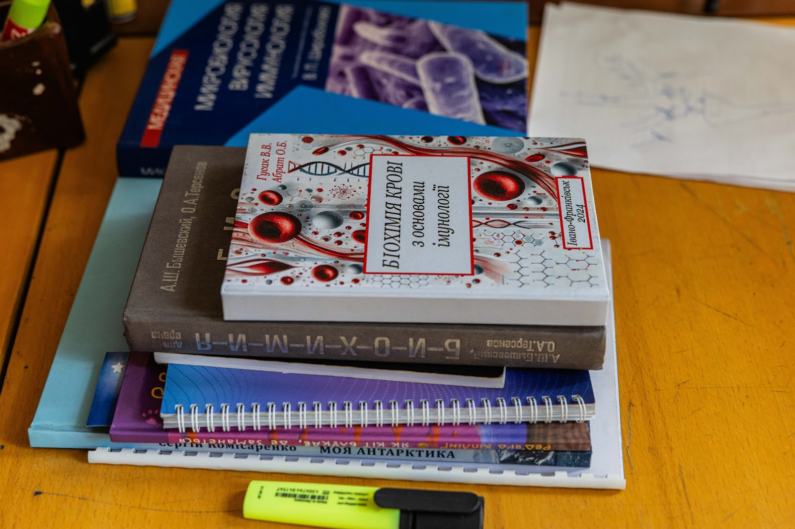
Conventional chemotherapy doesn’t precisely target the tumor, the Institute’s researchers explain. It damages healthy cells as well, especially those that divide rapidly. That’s why scientists all over the world are looking for “molecular addresses” of sorts to target tumor cells specifically. Receptors or other molecules that are much more abundant on the surface of tumor cells than on healthy cells — for example, growth factor² receptors — can be such “addresses.” The Institute’s researchers study non-toxic derivatives of the diphtheria toxin — CRM197 protein, or its receptor-binding fragment. These molecules have lost their toxicity but have retained their ability to interact with specific molecules on cell surfaces.
In lab experiments, they used these proteins as vehicles to deliver curcumin, a naturally occurring substance with potential anti-tumor capacities. This molecular complex accumulated more actively in sensitive tumor cells and inhibited their viability more than it affected cells with a low number of the corresponding receptor molecules.
“It’s an attempt to make the vehicle molecule recognize the target cell and deliver its load to it specifically,” Denys Kolybo explains.
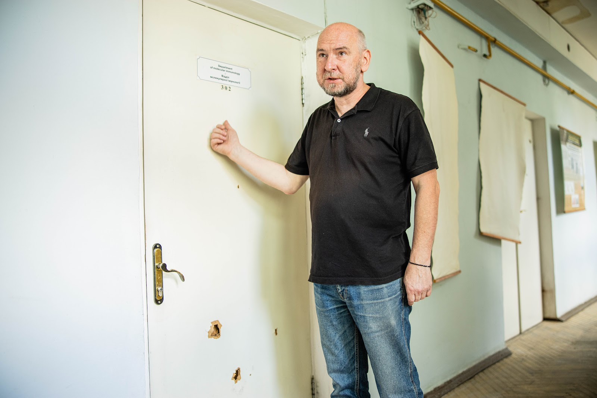
However, it’s a pre-clinical research stage for now; experiments are conducted on cell cultures. These are proof-of-mechanism experiments on targeted delivery, and that doesn’t mean a new anti-cancer drug has already been developed. There’s a long way for this technology to reach clinical use: trials on animal models, toxicity testing, dose adjustment, research on how the drug is distributed in the organism, and a couple of phases of clinical trials.
Another adjacent field is focused on a protein HB-EGF — a growth factor and, at the same time, a receptor for the diphtheria toxin. This molecule delivers signals that promote growth and regeneration to the cells, but in some tumors, its excessive activity may sustain uncontrolled cell proliferation. The Institute’s researchers have demonstrated that the activity of HB-EFG can be inhibited in a couple of ways, including by using CRM197 — the receptor-binding fragment of the diphtheria toxin — and by antibodies.
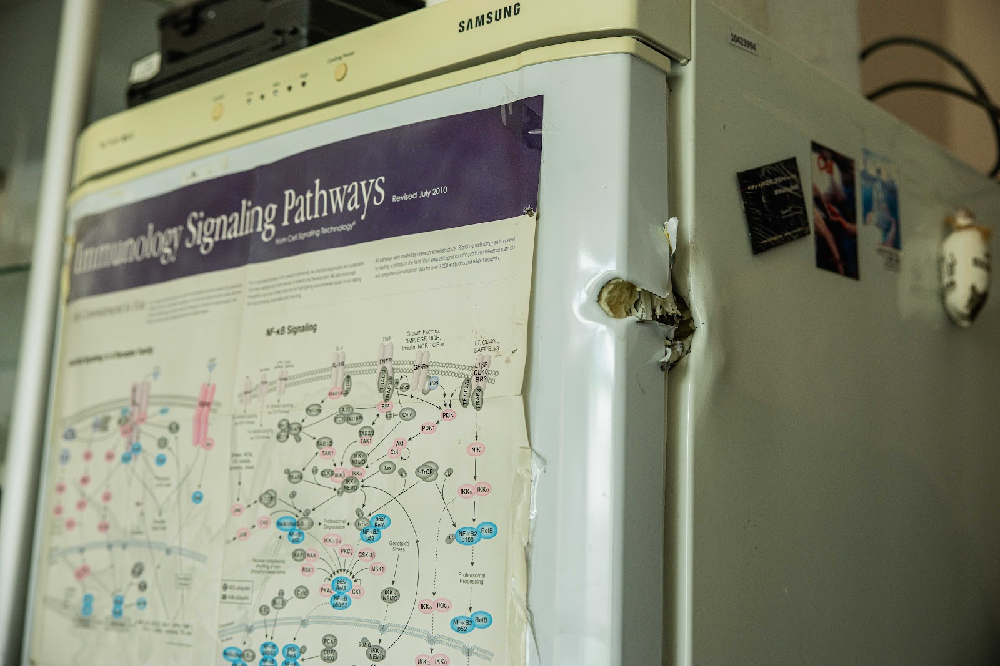
Denys also tells us about research on immune cells — macrophages, discovered by Mechnikov³. They are often called the “cleaners” of the organism. They devour bacteria, cellular debris, and damaged molecules. But their job isn’t limited to it. They also produce signal molecules, regulate inflammation, recruit other immune cells, and participate in tissue regeneration. For simplification, macrophages are sometimes divided into two types: M1, which maintain inflammation and fight infection, and M2, which facilitate regeneration. In reality, however, these aren’t two unchangeable cell types, but only extremes of a wide range of functional states. The same macrophage can change its behavior depending on the signals it receives from the surrounding tissue. “Reprogramming macrophages can be used to cure chronic inflammation connected to such conditions as Parkinson’s disease, chronic PTSD, Alzheimer’s disease, and also fibrosis and other diseases. We are working on developing a mechanism for reprogramming macrophages,” Denys Kolybo says.
Acute inflammation is necessary to protect the organism. A problem arises when it doesn’t stop after the danger is eliminated. Macrophages and the brain cells related to them — microglia — can produce inflammatory signals for a long time, gradually damaging healthy tissues. Such chronic neuroinflammation is considered one of the processes associated with Alzheimer’s and Parkinson’s diseases. Disruption of immune regulation is also being researched for the long-term consequences of severe stress and post-traumatic stress disorder. It doesn’t mean, however, that all these illnesses are caused solely by macrophages, or that they can be cured simply by “switching” immune cells, researchers at the Institute explain. The researchers’ task is to determine whether it’s possible to gently modify the behavior of macrophages: diminish excessive production of inflammatory signaling molecules without leaving the organism completely stripped of protection against infections. The so-called cholinergic anti-inflammatory pathway is being studied in this context. The nervous system can influence immune cells through acetylcholine, a molecule that passes signals between neurons. On the surface of macrophages, there’s a receptor α7nAChR. Its activation can inhibit part of the signals that maintain excessive inflammation. This mechanism is well-documented in the scientific literature and is considered a potential target for developing future anti-inflammatory drugs.
“We are trying to understand how neuron signaling, vitamin D, and other regulatory molecules together modify the functional state of macrophages,” Denys Kolybo explains. “Broadly speaking, we may call it reprogramming, but it’s not about a complete transformation of the cell, but modification of its behavior.”
These works are currently at the cellular model stage. Their closest goal isn’t to create a drug, but to understand molecular mechanisms and to search for substances that could safely regulate inflammation. Only after that can they move on to proper animal testing and, if successful, clinical trials.
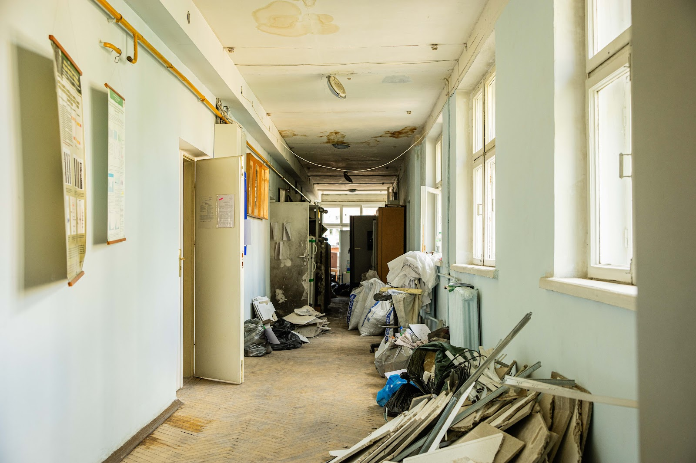
(Ir)reversible losses
After the beginning of the full-scale invasion, the Institute experienced a significant loss of workforce: “There were two of us left in the laboratory, even though there should be 12 employees according to the staffing requirements,” Denys recalls. “But then we brought our equipment in order, and new young employees started to show up; two of them have already managed to defend their theses.”
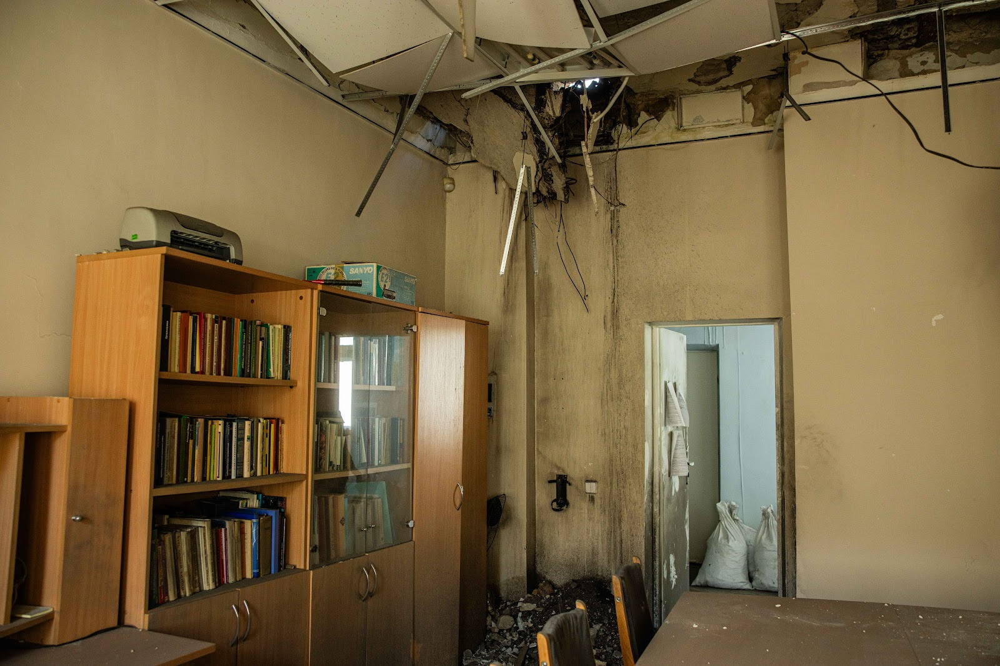
Blackouts were another significant challenge: research samples are stored in refrigerators. The leaseholders of part of the premises helped solve the problem by sharing their generator's power with the institute. Funding for liquid nitrogen was also lacking: “Research cell samples are stored in it. If it evaporates, everything is ruined. Our deputy director was buying liquid nitrogen with his own money and brought it here in a minivan,” Denys comments.
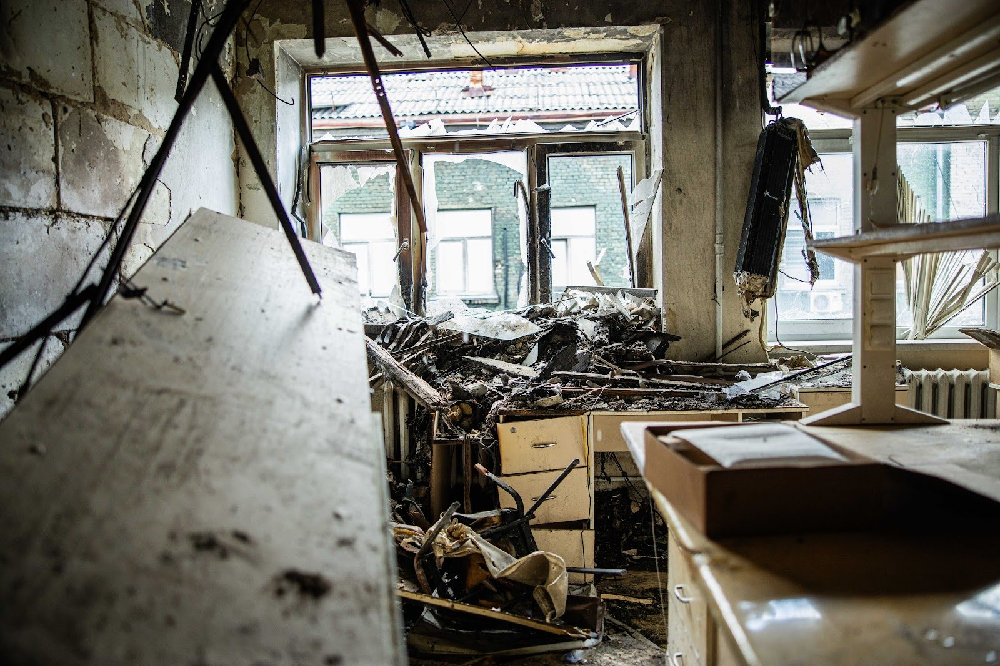
The Institute has adapted its operation to wartime conditions and has been successfully conducting research; however, at night on July 2, 2026, the Russians targeted the Institute, attacking it with a couple of jet-powered Heran-5 drones. The Institute’s facilities sustained considerable losses.
Denys Kolybo was elected as a director a week before the strike. He has found himself facing serious challenges as the damage has been rather severe. The newly elected director takes us on a brief tour.
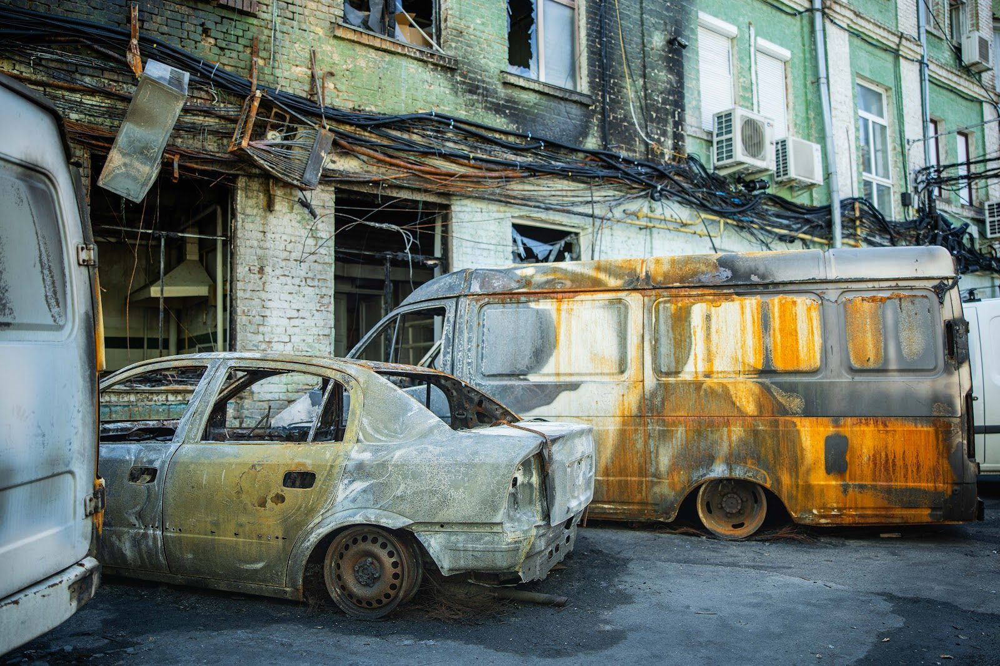
In the Institute’s courtyard, there are burnt minivans that were used to deliver nitrogen. The vivarium is also completely blackened. They managed to rescue some of the test animals.
The building that hosts laboratories and six departments of the Institute is severely damaged — the drone destroyed its roof.
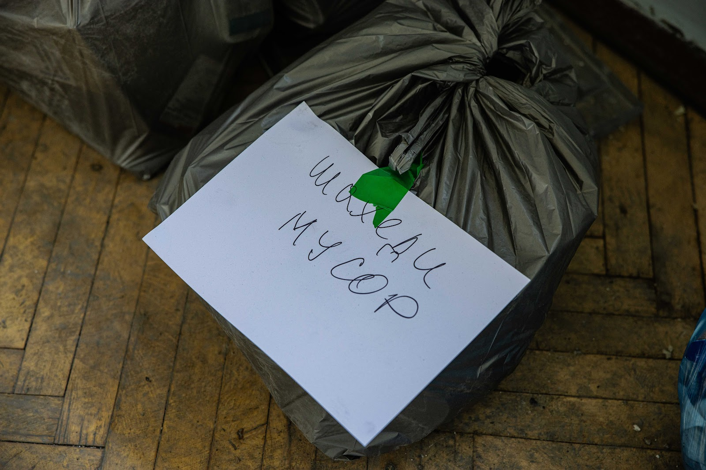
The Institute has been collaborating with the Federation of European Biochemical Societies (FEBS) and the International Union of Biochemistry and Molecular Biology (IUBMB). The scientists have been working with their international colleagues, so the tablets on laboratory doors are labeled in both Ukrainian and English. The doors are punctured by debris from the strike, and behind them, rooms are completely burnt out, with a hole in the reinforced-concrete ceiling, ruined equipment, and cracked reagent vials.
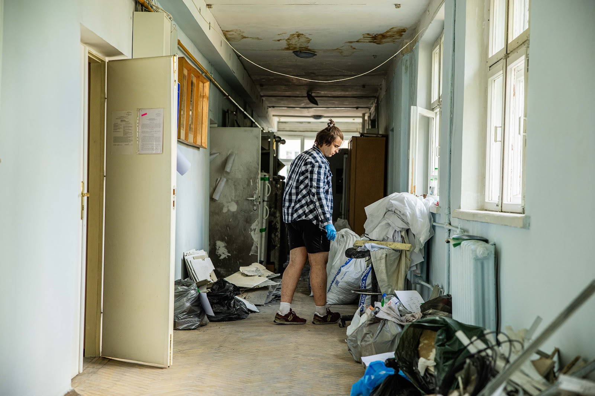
We are visiting the Institute less than a week after the strike, but the Institute’s personnel, together with trainees and volunteering colleagues, have already managed to tidy up the premises.
Denys roughly estimates the losses: “The equipment costs around 30–40 million hryvnas, the roof of the building costs roughly the same.”
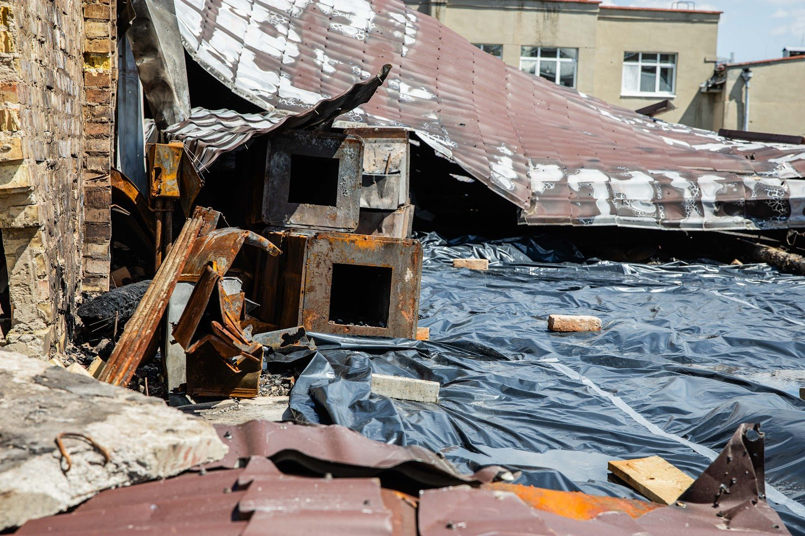
The lost or damaged equipment includes a flow cytometer, devices for the real-time polymerase chain reaction (PCR), a spectrophotometer, systems for protein purification and analysis, ultrasonic desintegrators, servers, computers, and lab furniture. Each device was doing its job, without which it’s almost impossible to conduct a modern biochemical experiment. A flow cytometer enables the analysis of thousands of individual cells in a couple of minutes and identifies which molecules each cell has on its surface, whether it’s activated, and whether it’s dying. They were using this device to study immune cells, evaluate the effects of potential drugs, and assess drug-delivery targeting.
The real-time PCR system enables the detection and quantification of DNA or RNA. It’s needed to diagnose infection, analyze gene function, and control genetically modified cells.
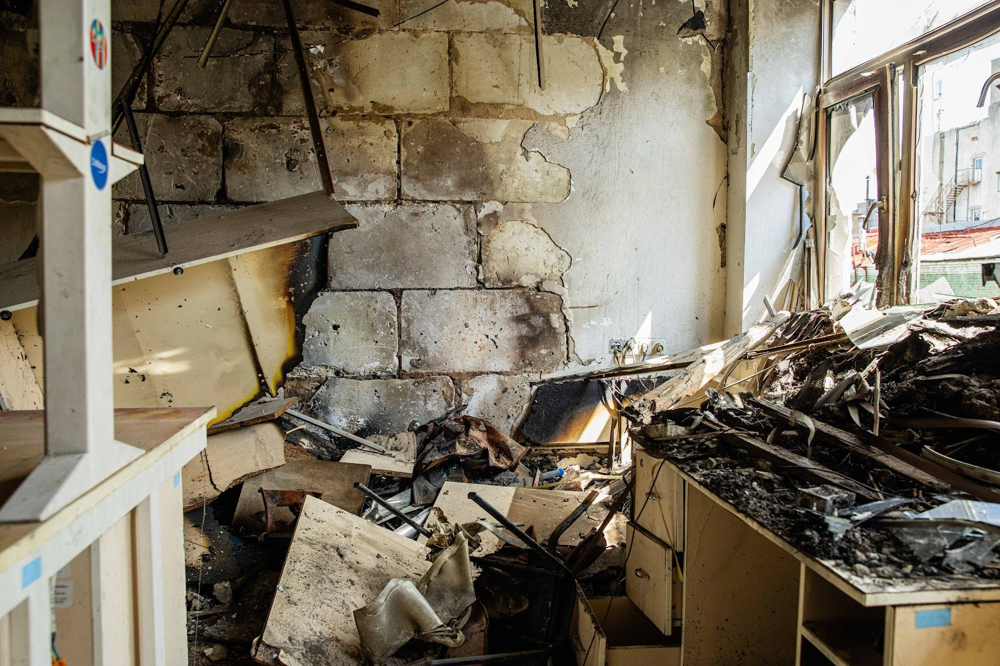
Spectrophotometers are used to measure the concentration of proteins, nucleic acids, and other substances. The ultrasonic disintegrator destroys cells, allowing researchers to isolate the required proteins or other molecules.
The loss of this equipment means more than just the necessity to buy new devices. Whole experiment cycles are halted, postgraduates can’t finish their work, and international projects risk ending without results.
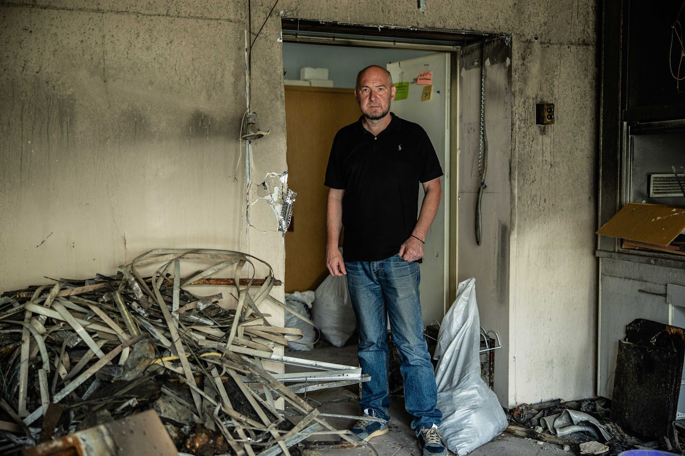
In the attic above the laboratories, exhaust hoods were installed, which were also critical for research. They were destroyed together with the roof. Without the roof, summer rains flood anything that has survived the attack. The Institute’s employees have covered the roof with polyethylene, but the ceilings still have yellow stains, and in some rooms, water drips onto the floor.
But the most painful loss for the researchers is the destruction of biological collections.
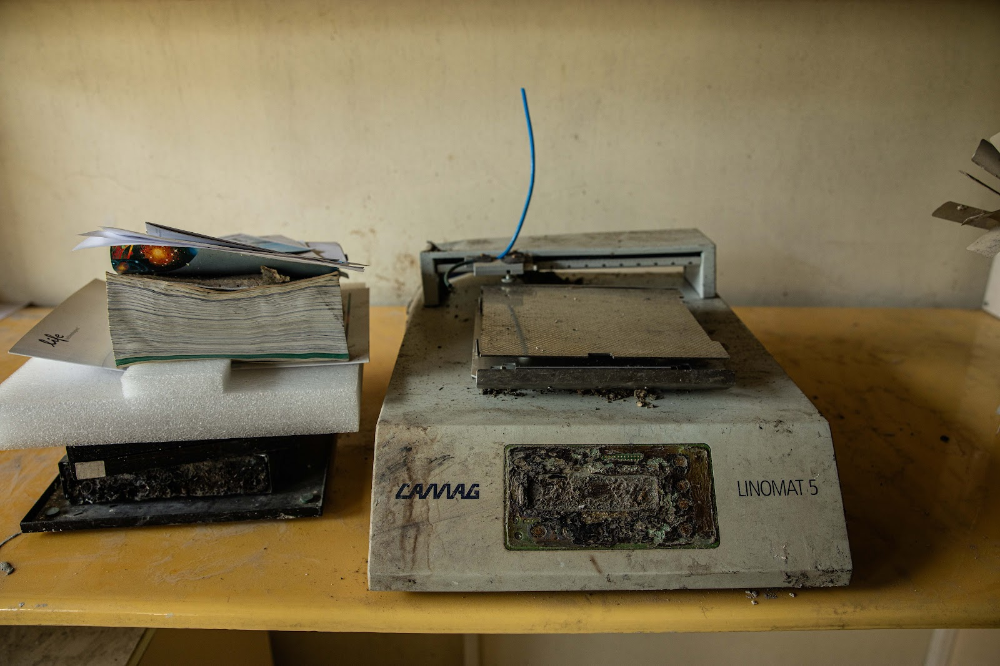
Cell lines were stored in the laboratories that produced antibodies and other useful molecules; they were listed as National Heritage. Some widely used cell lines can be ordered again from international cell banks. Some of the genetic constructs can be reproduced. But it will require costs and many months of work. Other samples may be lost forever. For example, unique cell clones with specific characteristics, material from specific lab animals, samples collected at a specific point in the experiment, or proteins and antibodies produced in small quantities over many years. National Heritage isn’t just vials in a refrigerator. They can be the result of years of selection, testing, failed attempts, and gradual improvements in methodology. In some cases, recreating it from scratch is more costly than buying new equipment.
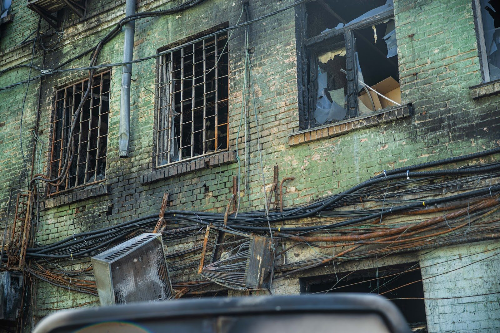
Denys predicts more staffing problems: “People won’t be sitting and crying on the ruins of laboratories; they want to conduct research. Fortunately, a couple of universities offer their premises for our work. We will consider this option.”
A targeted Russian strike on the Institute of Biochemistry is one more piece of evidence that the enemy realizes the value of science and is working to destroy it at any cost.
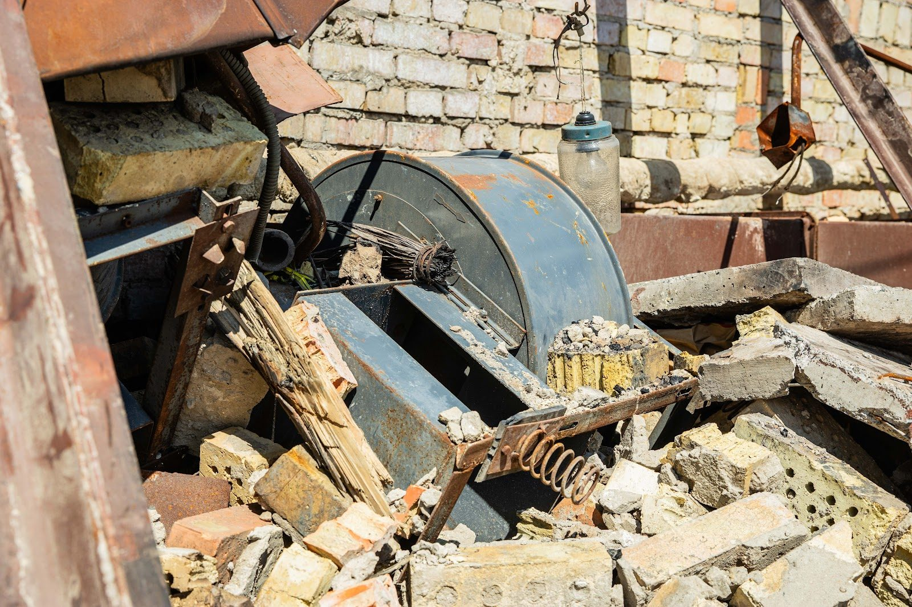
By historical irony, during WWII, the Institute was relocated to Ufa, Russia, and its buildings didn’t suffer any damage even when the front line moved through Kyiv back and forth a few times; it was only robbed. But this time, the Russians decided to specifically target the institute that bears the name of their former countryman of global renown.
Footnotes
1. Kharkiv was the first capital of the Soviet Republic established in Ukraine by Bolsheviks, while battles for Kyiv and other Ukrainian territories were still ongoing between Bolsheviks, Russian pro-imperial forces, and the armed forces of the newly proclaimed Ukrainian National Republic. In 1934, the capital was transferred to Kyiv.
2. Growth factors are a class of small, naturally occurring peptides and proteins that participate in signaling systems in organisms by binding to cell-surface receptors to stimulate growth and differentiation.
3. Illia (Elie) Mechnikov was a biologist and Nobel Prize laureate of complex heritage who was born, studied, and worked in Ukraine, which was then under the Russian Empire. He later moved to France, where he worked with Pasteur and conducted his most prominent research.
The reportage is published with the support of the Alfred P. Sloan Foundation.